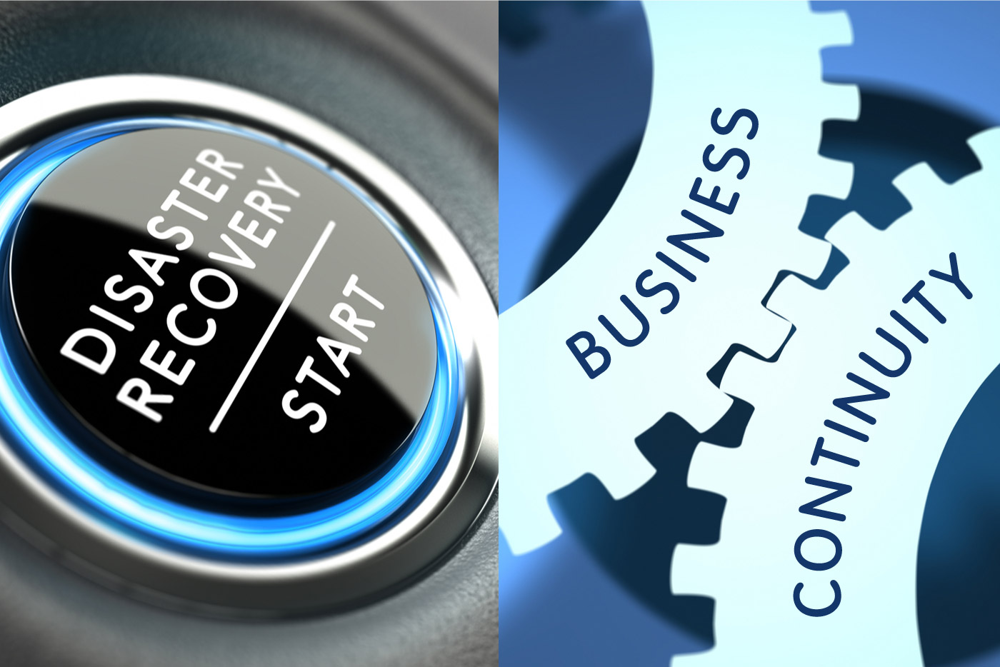

What is the time when your business is insolvent? A Definition

Your responsibilities and obligations as a director shift dramatically when your company becomes insolvent and you enter an environment where you could be subject to personal responsibility. This article focuses on what is legally defined as"insolvent and the various tests it must pass to it, the effect it can have on your position as director, and the best place to seek out help for insolvency.
What is the significance of insolvency?
Under normal circumstances, the responsibilities of directors of a business is to protect the interest of the business and its owners, i.e. shareholders. If a company is insolvent, these obligations change and directors' primary responsibility is to safeguard interest of creditor. This is a significant aspect on how directors conduct themselves when running the business. Failure to follow the correct procedure could expose directors to risk of personal liability as well as disqualification. small business insolvency advice
There is a belief that the directors of a business must cease their business in the event that the business is declared insolvent. However, this isn't the case since directors may legitimately try for ways to exit their problems. If they do decide to attempt to do this, they must be extremely vigilant and show that they had a reasonable chance of being able to achieve this in order to stay clear of any possible danger from Wrongful Trading under Section 214 of the Insolvency Act 1986. If you persist in trading beyond the point you should have been able to stop because there was no chance of being able to avoid an insolvent liquidation then you could be personally liable for any additional losses the creditors suffer from this point.
Additionally, following the liquidation process, the insolvency practitioner will review the actions that were taken during the time leading up to the time of insolvency (and when they are related parties, this examination can be extend to a number of years prior to the date of insolvency). They will be looking for evidence which could be considered to be fraudulent as transactions undervalue (where the assets you purchased were sold for less than their actual worth) and Preferences (where you place the creditors of a particular group in better situation than they otherwise would be) under Sections 238 or 239 under the Insolvency Act 1986 respectively.
All of these are issues which an Insolvency Practitioner must take into consideration when writing their report regarding the conduct of directors and forms the basis for the decision whether to ask for your disqualification as director.
The tests for insolvency
Section 123 of the Insolvency Act 1986 sets out the mandatory tests for insolvency. They are the company is either insolvent or insolvent and cannot pay its debts in the time they become due (often called the "cash flow test") or the assets of the company are less than the liabilities (often known as the "balance sheet test").
Failure to respond to any valid demand under the stipulated timeframe or to be in compliance with the requirements of a court judgement are considered to be evidence specific that a business is insolvent to meet its obligations and enough on its own to allow a creditor the right to submit the winding up petition.
From the director's point of from a director's point of view, the cash flow test is to consider whether the business will be able to meet its obligations at the time they are due to be paid.
If you're having difficulties with cash flow and being forced to pay your suppliers past their due dates, or not paying your PAYE/NI/ VAT payments in time, your business might be insolvent.
A balance sheet examination is designed to determine whether the business owes money in debt to creditors than amount of its assets. Reviewing the balance sheet won't suffice to determine this, however, since the test has to include future and contingent liabilities. When they are taken into consideration these could increase the value of liabilities significantly.
If the balance sheet hasn't been adjusted to reflect the value of obsolete stocks or plant and equipment as well as if the allowance for bad loans is not sufficient and the amount of assets listed on the balance sheet could be understated.
It is also accurate that accounting is usually done using an ongoing basis, as well. In the case of a bankruptcy, the value of assets that can be realized are often significantly lower than the going concern book values.
When you take these into account If the company's liabilities exceed its assets, the company may be considered insolvent.
Don't panic, but do act
If you feel that your business fails one of the tests above, then you, as a director, must act quickly.
As mentioned previously, there is no need to immediately stop trading. Actually, developing and implementing an turnaround plan to navigate through and out of challenges or raise new capital, could be the right method for a prudent board of directors to pursue. But as directors who are responsible must take into consideration is the new responsibility and whether you need to continue to trade in context of these. Keep in mind that from now you are required to safeguard the interests of creditors, not shareholders.
It is therefore important to create forecasts that outline how you anticipate trading to go in accordance with your plan, paying particular attention to how you'd like this to impact the financial position of your company's creditors. Make sure you record your conversations and the foundation of your decisions, and then be sure to monitor your performance according to the plan as you move towards the future. insolvency advice for small businesses
Importantly, you must get professional advice by speaking with a competent insolvency practitioner, an insolvency solicitor , or an accredited turnaround specialist as early as you can during the process, so that you can be sure to protect your position.
Of course , the information included in a piece like this will never be an exhaustive description of the legal situation because the laws in question are complex and susceptible to alter. The information contained in this article should only serve as a general guide to the legal issues that are involved. you must always seek professional advice regarding your specific circumstances prior to making any decision.